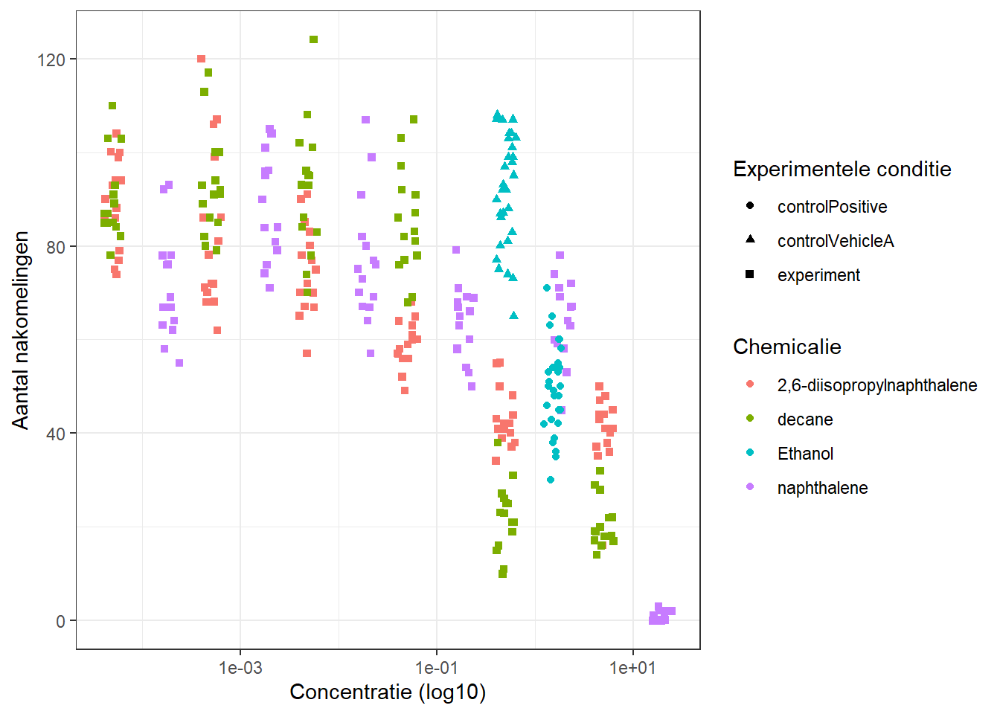

Reproducible-science
4a
## num [1:360] 4.99 4.99 4.99 4.99 4.99 4.99 4.99 4.99 4.99 4.99 ...## [1] "numeric"## # A tibble: 6 × 34
## plateRow plateColumn vialNr dropCode expType expReplicate expName
## <lgl> <lgl> <dbl> <chr> <chr> <dbl> <chr>
## 1 NA NA 1 a experiment 3 CE.LIQ.FLOW.062
## 2 NA NA 1 b experiment 3 CE.LIQ.FLOW.062
## 3 NA NA 1 c experiment 3 CE.LIQ.FLOW.062
## 4 NA NA 1 d experiment 3 CE.LIQ.FLOW.062
## 5 NA NA 1 e experiment 3 CE.LIQ.FLOW.062
## 6 NA NA 2 a experiment 3 CE.LIQ.FLOW.062
## # ℹ 27 more variables: expDate <dttm>, expResearcher <chr>, expTime <dbl>,
## # expUnit <chr>, expVolumeCounted <dbl>, RawData <dbl>, compCASRN <chr>,
## # compName <chr>, compConcentration <dbl>, compUnit <chr>,
## # compDelivery <chr>, compVehicle <chr>, elegansStrain <chr>,
## # elegansInput <dbl>, bacterialStrain <chr>, bacterialTreatment <chr>,
## # bacterialOD600 <dbl>, bacterialConcX <dbl>, bacterialVolume <dbl>,
## # bacterialVolUnit <chr>, incubationVial <chr>, incubationVolume <dbl>, …## tibble [360 × 34] (S3: tbl_df/tbl/data.frame)
## $ plateRow : logi [1:360] NA NA NA NA NA NA ...
## $ plateColumn : logi [1:360] NA NA NA NA NA NA ...
## $ vialNr : num [1:360] 1 1 1 1 1 2 2 2 2 2 ...
## $ dropCode : chr [1:360] "a" "b" "c" "d" ...
## $ expType : chr [1:360] "experiment" "experiment" "experiment" "experiment" ...
## $ expReplicate : num [1:360] 3 3 3 3 3 3 3 3 3 3 ...
## $ expName : chr [1:360] "CE.LIQ.FLOW.062" "CE.LIQ.FLOW.062" "CE.LIQ.FLOW.062" "CE.LIQ.FLOW.062" ...
## $ expDate : POSIXct[1:360], format: "2020-11-30" "2020-11-30" ...
## $ expResearcher : chr [1:360] "Sergio Reijnders - Ellis Herder" "Sergio Reijnders - Ellis Herder" "Sergio Reijnders - Ellis Herder" "Sergio Reijnders - Ellis Herder" ...
## $ expTime : num [1:360] 68 68 68 68 68 68 68 68 68 68 ...
## $ expUnit : chr [1:360] "hour" "hour" "hour" "hour" ...
## $ expVolumeCounted : num [1:360] 50 50 50 50 50 50 50 50 50 50 ...
## $ RawData : num [1:360] 44 37 45 47 41 35 41 36 40 38 ...
## $ compCASRN : chr [1:360] "24157-81-1" "24157-81-1" "24157-81-1" "24157-81-1" ...
## $ compName : chr [1:360] "2,6-diisopropylnaphthalene" "2,6-diisopropylnaphthalene" "2,6-diisopropylnaphthalene" "2,6-diisopropylnaphthalene" ...
## $ compConcentration : num [1:360] 4.99 4.99 4.99 4.99 4.99 4.99 4.99 4.99 4.99 4.99 ...
## $ compUnit : chr [1:360] "nM" "nM" "nM" "nM" ...
## $ compDelivery : chr [1:360] "Liquid" "Liquid" "Liquid" "Liquid" ...
## $ compVehicle : chr [1:360] "controlVehicleA" "controlVehicleA" "controlVehicleA" "controlVehicleA" ...
## $ elegansStrain : chr [1:360] "N2" "N2" "N2" "N2" ...
## $ elegansInput : num [1:360] 25 25 25 25 25 25 25 25 25 25 ...
## $ bacterialStrain : chr [1:360] "OP50" "OP50" "OP50" "OP50" ...
## $ bacterialTreatment : chr [1:360] "heated" "heated" "heated" "heated" ...
## $ bacterialOD600 : num [1:360] 0.743 0.743 0.743 0.743 0.743 0.743 0.743 0.743 0.743 0.743 ...
## $ bacterialConcX : num [1:360] 8 8 8 8 8 8 8 8 8 8 ...
## $ bacterialVolume : num [1:360] 300 300 300 300 300 300 300 300 300 300 ...
## $ bacterialVolUnit : chr [1:360] "ul" "ul" "ul" "ul" ...
## $ incubationVial : chr [1:360] "1,5 glass vial" "1,5 glass vial" "1,5 glass vial" "1,5 glass vial" ...
## $ incubationVolume : num [1:360] 1000 1000 1000 1000 1000 1000 1000 1000 1000 1000 ...
## $ incubationUnit : chr [1:360] "ul" "ul" "ul" "ul" ...
## $ incubationMethod : chr [1:360] "rockroll" "rockroll" "rockroll" "rockroll" ...
## $ incubationRPM : num [1:360] 35 35 35 35 35 35 35 35 35 35 ...
## $ bubble : logi [1:360] NA NA NA NA NA NA ...
## $ incubateTemperature: num [1:360] 20 20 20 20 20 20 20 20 20 20 ...## plateRow plateColumn vialNr dropCode
## Mode:logical Mode:logical Min. :1.000 Length:360
## NA's:360 NA's:360 1st Qu.:1.000 Class :character
## Median :2.000 Mode :character
## Mean :2.375
## 3rd Qu.:3.000
## Max. :6.000
##
## expType expReplicate expName expDate
## Length:360 Min. :3.00 Length:360 Min. :2020-11-30
## Class :character 1st Qu.:3.00 Class :character 1st Qu.:2020-11-30
## Mode :character Median :3.00 Mode :character Median :2020-11-30
## Mean :3.75 Mean :2020-11-30
## 3rd Qu.:3.75 3rd Qu.:2020-11-30
## Max. :6.00 Max. :2020-11-30
##
## expResearcher expTime expUnit expVolumeCounted
## Length:360 Min. :68 Length:360 Min. :50
## Class :character 1st Qu.:68 Class :character 1st Qu.:50
## Mode :character Median :68 Mode :character Median :50
## Mean :68 Mean :50
## 3rd Qu.:68 3rd Qu.:50
## Max. :68 Max. :50
##
## RawData compCASRN compName compConcentration
## Min. : 0.0 Length:360 Length:360 Min. : 0.000000
## 1st Qu.: 51.5 Class :character Class :character 1st Qu.: 0.000499
## Median : 72.0 Mode :character Mode :character Median : 0.049900
## Mean : 68.1 Mean : 1.535745
## 3rd Qu.: 88.0 3rd Qu.: 1.000000
## Max. :124.0 Max. :19.500000
## NA's :5 NA's :1
## compUnit compDelivery compVehicle elegansStrain
## Length:360 Length:360 Length:360 Length:360
## Class :character Class :character Class :character Class :character
## Mode :character Mode :character Mode :character Mode :character
##
##
##
##
## elegansInput bacterialStrain bacterialTreatment bacterialOD600
## Min. :25 Length:360 Length:360 Min. :0.743
## 1st Qu.:25 Class :character Class :character 1st Qu.:0.743
## Median :25 Mode :character Mode :character Median :0.743
## Mean :25 Mean :0.743
## 3rd Qu.:25 3rd Qu.:0.743
## Max. :25 Max. :0.743
##
## bacterialConcX bacterialVolume bacterialVolUnit incubationVial
## Min. :8 Min. :300 Length:360 Length:360
## 1st Qu.:8 1st Qu.:300 Class :character Class :character
## Median :8 Median :300 Mode :character Mode :character
## Mean :8 Mean :300
## 3rd Qu.:8 3rd Qu.:300
## Max. :8 Max. :300
##
## incubationVolume incubationUnit incubationMethod incubationRPM
## Min. :1000 Length:360 Length:360 Min. :35
## 1st Qu.:1000 Class :character Class :character 1st Qu.:35
## Median :1000 Mode :character Mode :character Median :35
## Mean :1000 Mean :35
## 3rd Qu.:1000 3rd Qu.:35
## Max. :1000 Max. :35
##
## bubble incubateTemperature
## Mode:logical Min. :20
## NA's:360 1st Qu.:20
## Median :20
## Mean :20
## 3rd Qu.:20
## Max. :20
## kijk of as.factor nodig is en als de concentratie als tekst is ingelezen, moet je deze eerst omzetten naar een numerieke variabele.


Het nut van de controles en wat ze zijn:
## [1] "experiment" "controlPositive" "controlNegative" "controlVehicleA"## # A tibble: 22 × 5
## expType compName compConcentration aantal_metingen gemiddelde
## <chr> <chr> <dbl> <int> <dbl>
## 1 controlNegative S-medium 0 30 85.9
## 2 controlPositive Ethanol 1.5 30 49.4
## 3 controlVehicleA Ethanol 0.5 30 91.8
## 4 experiment 2,6-diisopropyl… 0.0000499 15 89.3
## 5 experiment 2,6-diisopropyl… 0.000499 15 83.1
## 6 experiment 2,6-diisopropyl… 0.00499 15 75.1
## 7 experiment 2,6-diisopropyl… 0.0499 15 59
## 8 experiment 2,6-diisopropyl… 0.499 15 43.3
## 9 experiment 2,6-diisopropyl… 4.99 15 40.3
## 10 experiment decane 0.0000499 15 89.8
## # ℹ 12 more rowsNegatieve controle: De negatieve controle bestaat uit S-medium zonder toegevoegde chemische stof. Dit is de referentie waarmee je kunt bepalen hoe de wormen zich normaal ontwikkelen.
Positieve controle: De positieve controle bestaat uit ethanol met een concentratie van 1,50. Deze controle wordt gebruikt om te controleren of het experiment een bekend effect kan aantonen.
Vehicle controle: De vehicle controle bestaat uit ethanol met een concentratie van 0,50. Ethanol wordt hier gebruikt als oplosmiddel. Deze controle laat zien of het oplosmiddel zelf invloed heeft op de wormen.
Nut van normalisatie
Door de gegevens te normaliseren ten opzichte van de negatieve controle, kun je de resultaten gemakkelijker met elkaar vergelijken. De negatieve controle krijgt de waarde 1. Alle andere meetwaarden worden uitgedrukt als een verhouding ten opzichte van deze controle. Hierdoor kun je beter zien of een chemische stof zorgt voor een afname of toename van het aantal nakomelingen.
Stappenplan:
- Installeer en laad het package drc.
- Importeer de dataset en controleer de gegevens.
- Selecteer het chemicalie dat je wilt onderzoeken.
- Gebruik de concentraties als onafhankelijke variabele en de genormaliseerde meetwaarden als afhankelijke variabele.
- Maak een dose-response model met drm().
- Gebruik een log-logistisch model, bijvoorbeeld LL.4().
- Bekijk de dose-response curve.
- Bereken de IC50 met ED().
- Controleer of het model goed bij de gegevens past.
- Rapporteer de resultaten en eventuele onzekerheden
- Schrijf een deelconclusie
Bronnen
- https://journals.plos.org/plosone/article?id=10.1371/journal.pone.0146021
- https://lesmaterialen.rstudio.hu.nl/workflows-reader/represintro.html
- OpenAI. (2026). ChatGPT (GPT-6) [Generatieve AI]. https://chatgpt.com/ Voor het samenvatten en verduidelijken van de lesstof is gebruikgemaakt van ChatGPT (OpenAI, 2026).
4b
Jing, S., & Wang, H. (2025). Infectivity and fatality of influenza in pre- and post-COVID-19 pandemic year. PLOS Computational Biology, 21(7), e1013229. link: https://journals.plos.org/ploscompbiol/article?id=10.1371/journal.pcbi.1013229
onderzoeksvraag: ‘We aim to compare influenza’s epidemiological characteristics between pre-pandemic and post-pandemic periods to inform public health responses.’
Samenvatting van methode en resultaten:
Methode: De onderzoekers in dit onderzoek maakte twee verschillende wiskundige modellen om de verspreiding en de sterfte van influenza te onderzoeken. Het eerste model verdeelt de bevolking in drie leftijdscatogorien: 0-17 jaar, 18-64 jaar en 65 jaar en ouder. Het tweede model onderzocht het verschil tussen influenza A en B. De onderzoekers gebruikte hierbij openbare Amerikaanse gegevens over influenza-ziekenhuisopnames, sterfte en ook besmittingen uit het seizoen 2016-2019 en 2022-2024. Doormiddel van statistische berekeningen en simulaties schatten ze de overdrachts- en sterftecijfers.
Resultaten: Uit de zesultaten kwam dat de onderzoekers merkte dat de transmissiesnelheden van de griep bij volwassenen tijdelijk daalde tijdens de pandemie, maar binnen een jaar na het versoepelen van de NPI weer terugkeren naar het niveau van vóór de pandemie, terwijl de transmissie bij kinderen stabiel blijft. Het sterftecijfer voor alle leeftijden steeg tijdelijk tijdens de pandemie, waarschijnlijk door verstoringen in de gezondheidszorg, voordat het na de pandemie weer naar het normale niveau terugkeerde. De transmissie van Influenza A nam af tijdens de pandemie, maar herstelt zich daarna, terwijl Influenza B schommelende trends liet zien (Jing en Wang (2025)).
Beoordeling
| Criterium | Beoordeling | Onderbouwing |
|---|---|---|
| Study Purpose | Yes | Het onderzoeksdoel wordt beschreven in de laatste alinea van de Introduction. De onderzoekers willen de invloed van COVID-19 op de overdracht en sterfte van influenza onderzoeken. (Introduction, alinea 6). |
| Data Availability Statement | Yes | Het artikel bevat een aparte sectie Data Availability waarin staat dat de code en data beschikbaar zijn via GitHub. (Data Availability). |
| Data Location | GitHub | De auteurs verwijzen naar een GitHub-repository waarin de gebruikte code en data beschikbaar zouden moeten zijn. (Data Availability). |
| Study Location | Yes - Verenigde Staten | De onderzoekers hebben Amerikaanse gegevens gebruikt. (Methods - Data collection). |
| Author Review | Professioneel | De corresponderende auteur Hao Wang vermeldt een professioneel e-mailadres van de University of Alberta. (Auteursgegevens). |
| Ethics Statement | No - niet aangetroffen | Er is geen afzonderlijke ethische verklaring aangetroffen. (Verklaringen onder de Author summary). |
| Funding Statement | Yes | Er is een aparte financieringsverklaring opgenomen waarin onderzoeksfinanciering uit Canada en China wordt genoemd. (Funding). |
| Code Availability | Yes volgens verklaring; praktische beschikbaarheid controleren | De auteurs geven aan dat de code beschikbaar is via GitHub. De daadwerkelijke aanwezigheid en volledigheid van de scripts moet afzonderlijk worden gecontroleerd. (Data Availability). |
Het onderzoek voldoet dus aan de meeste transparantiecriteria’s.
R-code
link naar de code: https://github.com/shuanglinjing/Long-COVID-impact-on-influenza-infectivity-and-fatality/tree/master
Ik vind dit nogal moeilijk, omdat de code anders lijkt dan wat ik geleerd heb. Ik ga dit nog even vragen in de lessen.